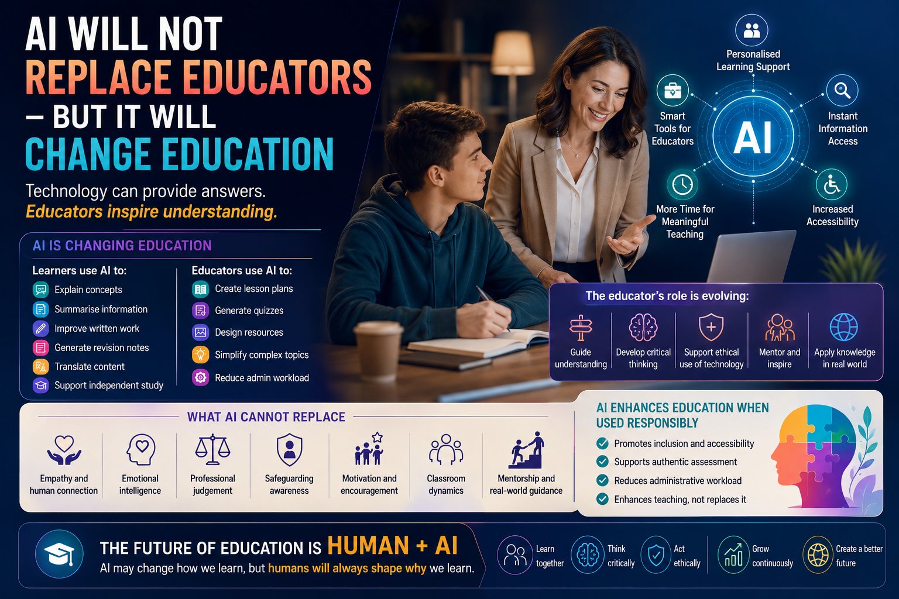

Technology can provide answers, automate tasks, and support learning, but meaningful education still depends on human guidance, professional judgement, empathy, mentorship, and authentic understanding.

Artificial Intelligence is becoming one of the most discussed topics in modern education. Across schools, colleges, universities, and vocational training environments, AI-powered systems such as ChatGPT, Microsoft Copilot, and Gemini are increasingly being used to support lesson planning, learner engagement, accessibility, assessment preparation, administration, and independent study.
As AI adoption continues to grow, many educators are asking an important question: will AI eventually replace teachers and educators?
While the concern is understandable, the reality is far more balanced. AI is unlikely to replace educators entirely. However, it will significantly change how education is delivered, supported, assessed, and experienced in the years ahead.
One of the biggest misconceptions surrounding AI is the idea that education is simply about delivering information. In reality, effective education involves far more than content delivery alone.
Great educators do not simply provide answers. They:
These are deeply human educational skills. AI systems can generate explanations quickly, but they cannot genuinely replace empathy, emotional intelligence, safeguarding awareness, mentorship, or professional judgement.
Although AI is unlikely to replace educators, it is already transforming how education operates.
This shift changes where educators add value. The role increasingly focuses on guiding understanding, verifying accuracy, supporting ethical use of technology, developing critical thinking, and helping learners apply knowledge correctly.
In many ways, AI is shifting education away from memorisation and towards interpretation, application, reasoning, reflection, and professional judgement.
AI can significantly improve accessibility when used responsibly. Learners with additional learning needs, language barriers, low confidence, or literacy challenges may benefit from AI-assisted technologies.
Translation systems and text simplification tools can help ESOL learners understand instructions, tasks, and learning content more clearly.
Speech-to-text systems, text-to-speech tools, and adaptive learning systems can support learners with dyslexia or accessibility needs.
Learners may privately ask AI systems for additional explanations without fear of embarrassment, helping improve participation and confidence.
These tools can create more inclusive learning environments when balanced with human guidance and safeguarding oversight.
One growing concern is over-reliance on AI-generated information. Learners may begin copying AI-generated responses without fully understanding the material being produced. AI systems may also generate inaccurate or misleading information while presenting it confidently as fact.
This is why educators remain critically important.
AI may provide information, but educators help learners:
Assessment practices are also changing rapidly. Traditional written assignments alone are becoming less reliable as evidence of authentic understanding. Educators increasingly need to use:
This means educators are becoming even more important in maintaining authenticity, integrity, and meaningful assessment decisions.
AI is likely to reduce some repetitive administrative pressures that have historically contributed to educator burnout. Tasks such as lesson planning support, basic resource generation, scheduling assistance, and administrative organisation may increasingly be supported by AI systems.
If implemented responsibly, this could allow educators to spend more time focusing on:
The future of education will probably belong to professionals who can combine technological innovation with strong human teaching, ethical judgement, learner support, and authentic educational practice.
The most successful educational environments are unlikely to reject AI completely or rely on it excessively. Instead, they will combine human expertise with responsible AI integration.
Educational providers should focus on using AI to strengthen teaching and learning while keeping human oversight at the centre of education.
A college introduces AI-supported revision tools for learners while also requiring professional discussion for selected assignments. Educators use AI to reduce administrative workload and generate learning resources, allowing more time for mentoring and learner support. IQAs monitor whether assessment authenticity remains strong and whether staff apply AI guidance consistently across departments.